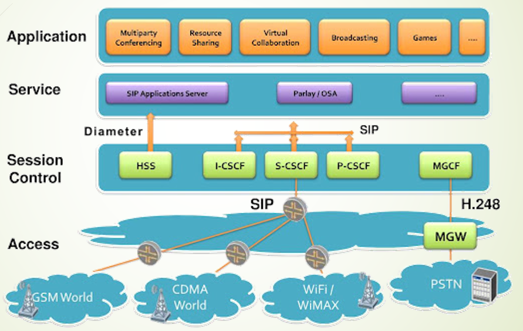

Projet IMS – Réseaux télécoms nouvelle génération

Objectif du projet
Étudier et comprendre l’architecture IMS (IP Multimedia Subsystem), qui constitue le cœur des réseaux télécoms 4G/5G pour les services multimédias (voix, vidéo, messagerie).
Éléments analysés
- Fonctionnement des protocoles de signalisation SIP et Diameter
- Architecture logique : CSCF, HSS, AS, P-CSCF, etc.
- Appels VoLTE et processus d’établissement de session
- Gestion de la QoS (Quality of Service) dans un réseau IMS
- Mécanismes de facturation (Policy & Charging Control)
Méthodologie
- Analyse documentaire à partir de standards 3GPP
- Étude de cas réels : VoLTE, appels IMS, interconnexion IMS–IP
- Représentation schématique des composants IMS
Technologies & concepts
- VoIP (Voice over IP), SIP, Diameter
- 4G / LTE – VoLTE
- Quality of Service (QoS)
- IMS Core : P-CSCF, I-CSCF, S-CSCF
- Charging, Policy Control, 3GPP
← Retour aux projets